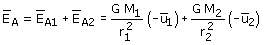

|
Campo creado por una distribución de masas puntuales El campo que crean varias masas puntuales en un punto es la suma vectorial de los campos que crea cada una por separado en dicho punto (Principio de superposición) En el caso de una distribución de dos masas sería:  ¿Sabes sumar vectores en esta forma? En algunas distribuciones de masas puede que se compensen entre si los campos creados por algunas de ellas. Vale la pena analizar si ocurre esto para evitarnos cálculos. |